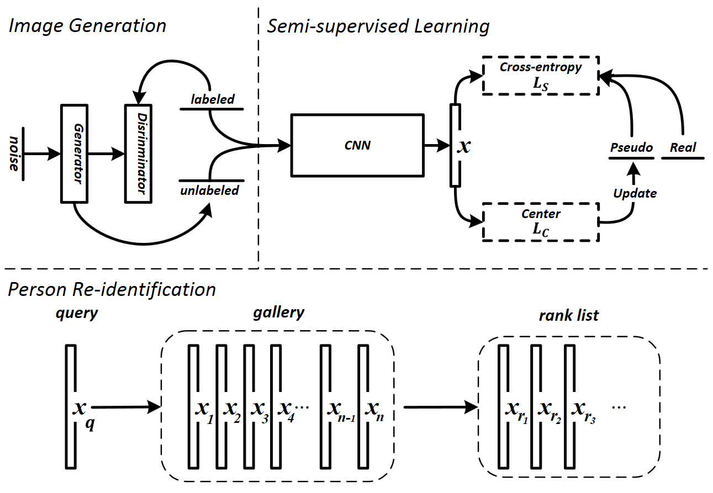

|  |
Guodong Ding1, Shanshan Zhang1, Salman Khan2, Zhenming Tang1, Jian Zhang3 and Fatih Porikli2
1Nanjing Univerisity of Science and Technology, 2Australian National University, 3University of Technology Sydney
Vision-based person re-identification aims to match a person’s identity across multiple images, which is a fundamental task in multimedia content analysis and retrieval. Deep neural networks have recently manifested great potential in this task. However, a major bottleneck of existing supervised deep networks is their reliance on large amount of annotated training data. Manual labeling for person identities in large-scale surveillance camera systems is quite challenging and incurs significant costs. Some recent studies adopt generative model outputs as training data augmentation.
To more effectively use this synthetic data for an improved feature learning and re-identification performance, this work proposes a novel Feature Affinity-based Pseudo Labeling (FAPL) method with two possible label encodings. To the best of our knowledge, this is the first study that employs pseudo-labeling by measuring the affinity of unlabeled samples with the under- lying clusters of labeled data samples using the intermediate feature representations from deep networks. We propose to train the network with the joint supervision of cross-entropy loss together with a center regularization term, which not only ensures discriminative feature representation learning but also simultaneously predicts pseudo-labels for unlabeled data. We show that both label encodings can be learned in a unified manner and help improve the overall performance. Our extensive exper- iments on three person re-identification datasets, Market-1501, DukeMTMC-reID and CUHK03, demonstrate significant per- formance boost over the state-of-the-art person re-identification approaches.